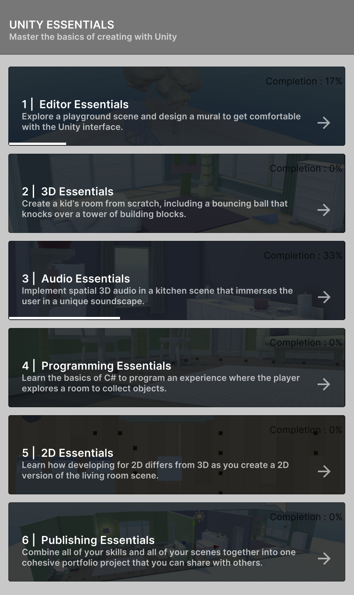
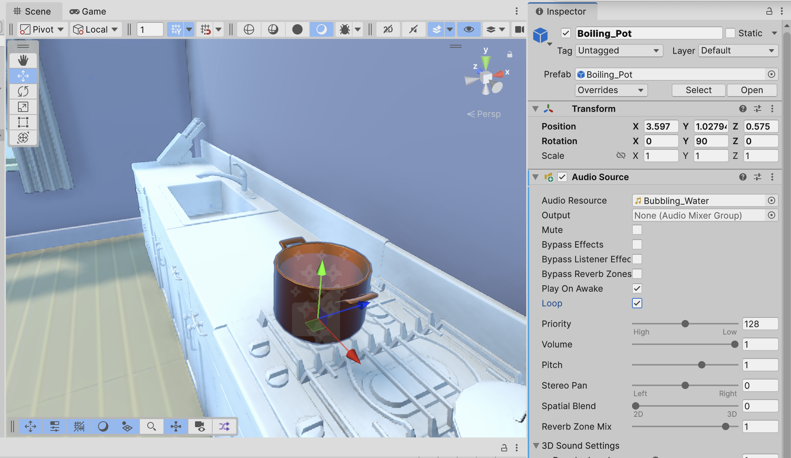
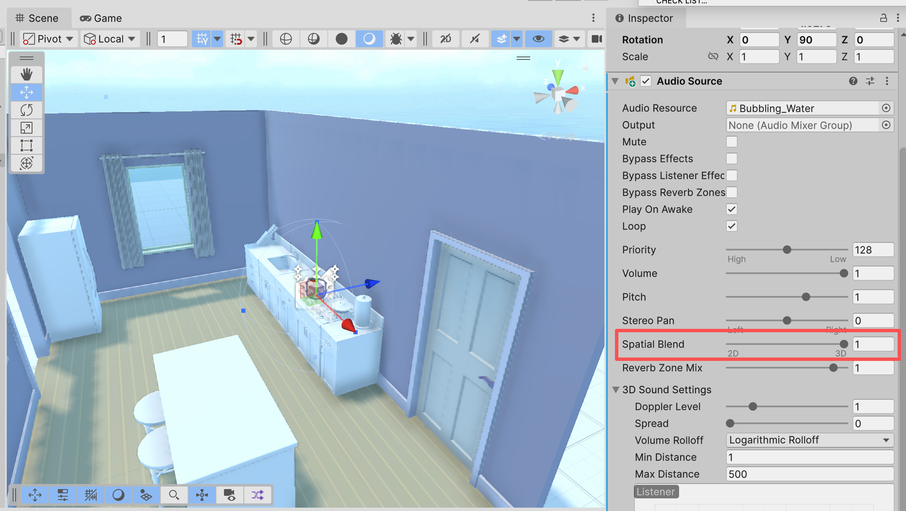
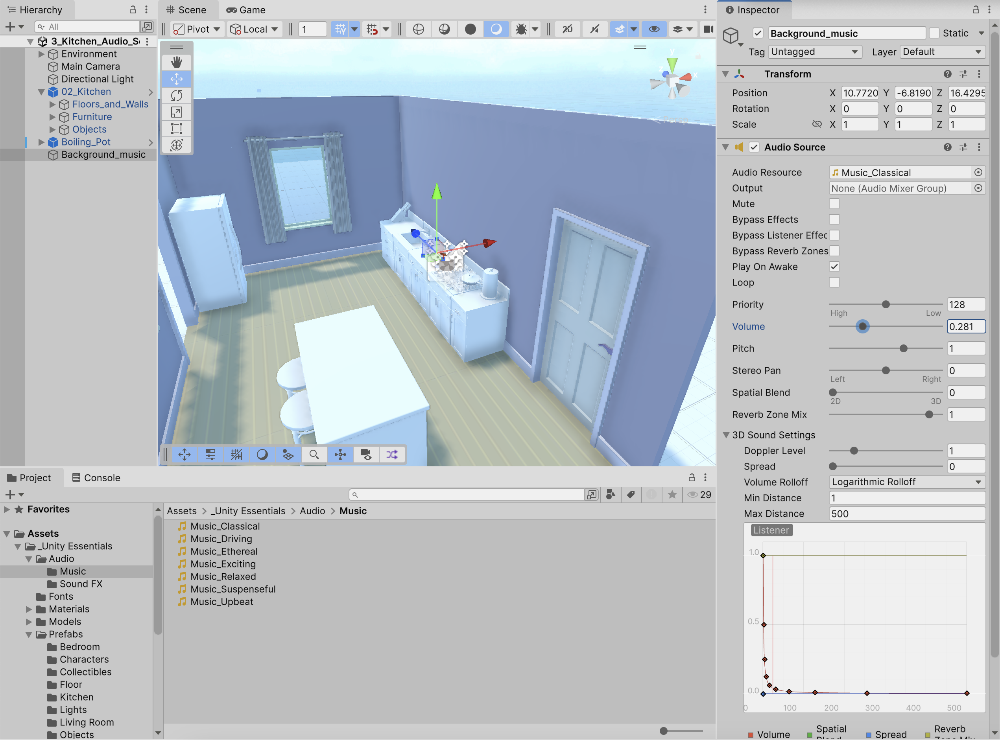
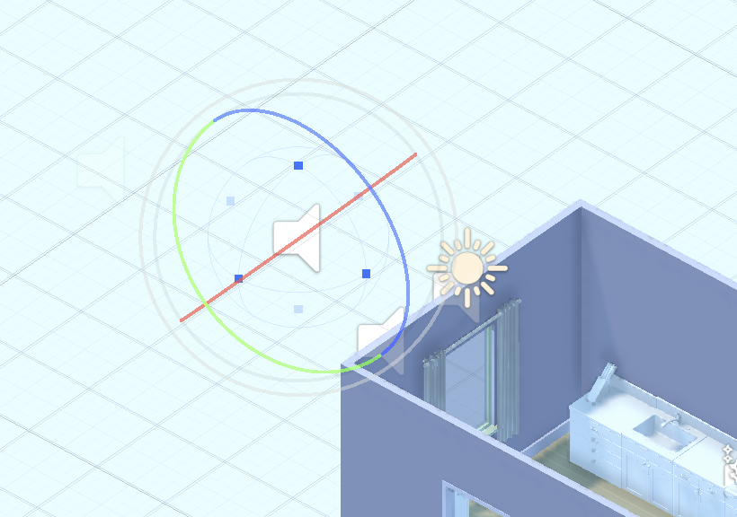

Author: Zeyu Liang
I could not open either of the two links provided in the PDF. However, I found an official tutorial on the Unity Learn platform called "Create Your First Project", which I used instead.
I already had some previous experience with Unity, so I skipped the step of downloading Unity Hub and the Unity Editor. I already had both installed and also had a Unity account.

I could not find the "Get Started With Unity" template mentioned in the tutorial. However, I found the "Essentials Pathway" template in the Learning section of Unity Hub, which provides similar beginner guidance and in-Editor tutorials. I selected this template and started downloading the required files to create the project.

I reviewed the course list and understood that it covers topics from the interface and 3D to audio, scripting, and 2D, and finally publishing the project. I chose to mainly focus on the audio section because I had not used spatial audio before.
I added an Audio Source component to the boiling_pot and used the bubbling sound as the audio source. I also enabled the loop option.
When I changed the Spatial Blend value to 1 and ran the scene, it felt like magic because I could hear the volume change depending on distance and direction.
I added another Audio Source to the scene and selected background music for it.
Problem: Then I tried to add more sound sources, but I found that even though I rotated them, the icons still looked the same. I am not sure whether I successfully changed the direction of the audio.
